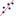

BarChart[Start
Value, End Value, List of Heights]: Creates a bar chart over the
given interval where the number of bars is determined by the length of the list
whose elements are the heights of the bars.
Example: BarChart[10,
20, {1,2,3,4,5} ] gives you a bar chart with five bars of
specified height in the interval [10, 20].
BarChart[Start
Value a, End Value b, Expression, Variable k, From Number c, To Number d]:
Creates a bar chart over the given interval [a, b], that calculates the bars’ heights using the expression whose
variable k runs from number c to number d.
Example: If p = 0.1, q = 0.9, and n = 10 are numbers, then
BarChart[ -0.5, n + 0.5,
BinomialCoefficient[n,k]*p^k*q^(n-k), k, 0, n ] gives you a bar chart
in the interval [-0.5, n+0.5]. The
heights of the bars depend on the probabilities calculated using the given
expression.
BarChart[Start Value a, End Value b, Expression, Variable k, From Number c, To Number d, Step Width s]: Creates a bar chart over the given interval [a, b], that calculates the bars’ heights using the expression whose variable k runs from number c to number d using step width s.
BarChart[List
of Raw Data, Width of Bars]: Creates a bar chart using the given
raw data whose bars have the given width.
Example: BarChart[
{1,1,1,2,2,2,2,2,3,3,3,5,5,5,5}, 1]
BarChart[List
of Data, List of Frequencies]: Creates a bar chart using the list
of data with corresponding frequencies.
Note: The List of data must be a list where
the numbers go up by a constant amount.
Examples:
· BarChart[{10,11,12,13,14}, {5,8,12,0,1}]
· BarChart[{5, 6, 7, 8, 9}, {1, 0, 12, 43, 3}]
· BarChart[{0.3, 0.4, 0.5, 0.6}, {12, 33, 13, 4}]
BarChart[List
of Data , List of Frequencies, Width of Bars w]: Creates a bar chart
using the list of data and corresponding frequencies whose bars are of width w.
Note: The List of data must be a list
where the numbers go up by a constant amount
Examples:
· BarChart[{10,11,12,13,14}, {5,8,12,0,1}, 0.5] leaves gaps between bars.
· BarChart[{10,11,12,13,14}, {5,8,12,0,1}, 0] produces a line graph.
BoxPlot[yOffset,
yScale, List of Raw Data]: Creates a box plot using the given raw
data and whose vertical position in the coordinate system is controlled by
variable yOffset and whose height is
influenced by factor yScale.
Example: BoxPlot[0,
1, {2,2,3,4,5,5,6,7,7,8,8,8,9}]
BoxPlot[yOffset, yScale, Start Value a, Q1, Median, Q3, End Value b]: Creates a box plot for the given statistical data in interval [a, b].
CorrelationCoefficient[List of x-Coordinates, List of y-Coordinates]: Calculates the product moment correlation coefficient using the given x- and y-coordinates.
CorrelationCoefficient[List of Points]: Calculates the product moment correlation coefficient using the coordinates of the given points.
Covariance[List 1 of Numbers, List 2 of Numbers]: Calculates the covariance using the elements of both lists.
Covariance[List of Points]: Calculates the covariance using the x- and y-coordinates of the points.
FitLine[List of Points]: Calculates the y on x regression line of the points.
FitLineX[List of Points]: Calculates the x on y regression line of the points.
Note: Also see tool  Best Fit Line
FitExp[List of Points]: Calculates the exponential regression curve.
FitLog[List of Points]: Calculates the logarithmic regression curve.
FitLogistic[List
of Points]: Calculates the regression curve in the form
a/(1+b x^(-kx)).
Note: The first and last data point should be
fairly close to the curve. The list should have at least 3 points, preferably
more.
FitPoly[List of Points, Degree n of Polynomial]: Calculates the regression polynomial of degree n.
FitPow[List
of Points]: Calculates the regression curve in the form a xb.
Note: All points used need to be in the first
quadrant of the coordinate system.
FitSin[List
of Points]: Calculates the regression curve in the form
a + b sin(cx + d).
Note: The list should have at least 4 points,
preferably more. The list should cover at least two extremal points. The first
two local extremal points should not be too different from the absolute
extremal points of the curve.
Histogram[List
of Class Boundaries, List of Heights]: Creates a histogram with
bars of the given heights. The class boundaries determine the width and
position of each bar of the histogram.
Example: Histogram[{0,
1, 2, 3, 4, 5}, {2, 6, 8, 3, 1}] creates a histogram with 5 bars
of the given heights. The first bar is positioned at the interval [0, 1], the second bar is positioned at
the interval
[1, 2], and so on.
Histogram[List
of Class Boundaries, List of Raw Data]: Creates a histogram using
the raw data. The class boundaries determine the width and position of each bar
of the histogram and are used to determine how many data elements lie in each
class.
Example: Histogram[{1,
2, 3, 4},{1.0, 1.1, 1.1, 1.2, 1.7, 2.2, 2.5, 4.0}] creates a
histogram with 3 bars, with the heights 5 (first bar), 2 (second bar), and 1 (third
bar).
InverseNormal[Mean
μ, Standard Deviation
σ, Probability
P]: Calculates the function Φ-1(P) * σ +
μ where Φ -1 is the inverse of the probability
density function Φ for N(0,1).
Note: Returns the x-coordinate with the given probability to the left under the
normal distribution curve.
Mean[List of Numbers]: Calculates the mean of the list elements.
MeanX[List of Points]: Calculates the mean of the x-coordinates of the points in the list.
MeanY[List of Points]: Calculates the mean of the y-coordinates of the points in the list.
Median[List of Numbers]: Determines the median of the list elements.
Mode[List of
Numbers]: Determines the mode(s) of the list elements.
Examples:
· Mode[{1,2,3,4}] returns an empty list {}.
· Mode[{1,1,1,2,3,4}] returns the list {1} .
· Mode[{1,1,2,2,3,3,4}] returns the list {1, 2, 3}.
Normal[Mean μ, Standard Deviation σ, Variable Value x]:
Calculates the function Φ((x – μ) / σ)
where Φ is the probability density function for N(0,1) .
Note: Returns the probability for a given x-coordinate value (or area under the
normal distribution curve to the left of the given x-coordinate).
Q1[List of Numbers]: Determines the lower quartile of the list elements.
Q3[List of Numbers]: Determines the upper quartile of the list elements.
SD[List of Numbers]: Calculates the standard deviation of the numbers in the list.
SigmaXX[List
of Numbers]: Calculates the sum of squares of the given numbers.
Example: In order to work out the variance of
a list you may use SigmaXX[list]/Length[list]
- Mean[list]^2.
SigmaXX[List of Points]: Calculates the sum of squares of the x-coordinates of the given points.
SigmaXY[List of x-Coordinates, List of y-Coordinates]: Calculates the sum of the products of the x- and y-coordinates.
SigmaXY[List
of Points]: Calculates the sum of the products of the x- and y-coordinates.
Example: You can work out the covariance of a
list of points using SigmaXY[list]/Length[list]
- MeanX[list] * MeanY[list].
SigmaYY[List of Points]: Calculates the sum of squares of y-coordinates of the given points.
Sxx[List of Numbers]: Calculates the statistic Σ(x2) - Σ(x) * Σ(x)/n.
Sxx[List of Points]: Calculates the statistic Σ(x2) - Σ(x) * Σ(x)/n using the x-coordinates of the given points.
Sxy[List of Numbers,
List of Numbers]: Calculates the statistic
Σ(xy)
- Σ(x) * Σ(y)/n.
Sxy[List of Points]: Calculates the statistic Σ(xy) - Σ(x) * Σ(y)/n.
Syy[List of Points]: Calculates the statistic Σ(y2) - Σ(y) * Σ(y)/n using the y-coordinates of the given points.
Note: These quantities are
simply unnormalized forms of the variances and covariance of X and Y given by Sxx = N var(X),
Syy = N var(Y), and Sxy = N cov(X, Y).
Example: You can work out the correlation
coefficient for a list of points using
Sxy[list] / sqrt(Sxx[list]
Syy[list]).
Variance[List of Numbers]: Calculates the variance of list elements.